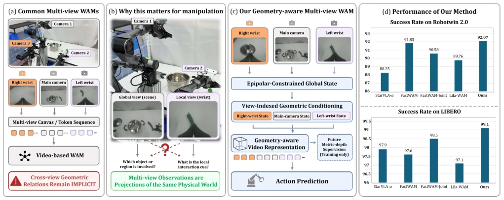
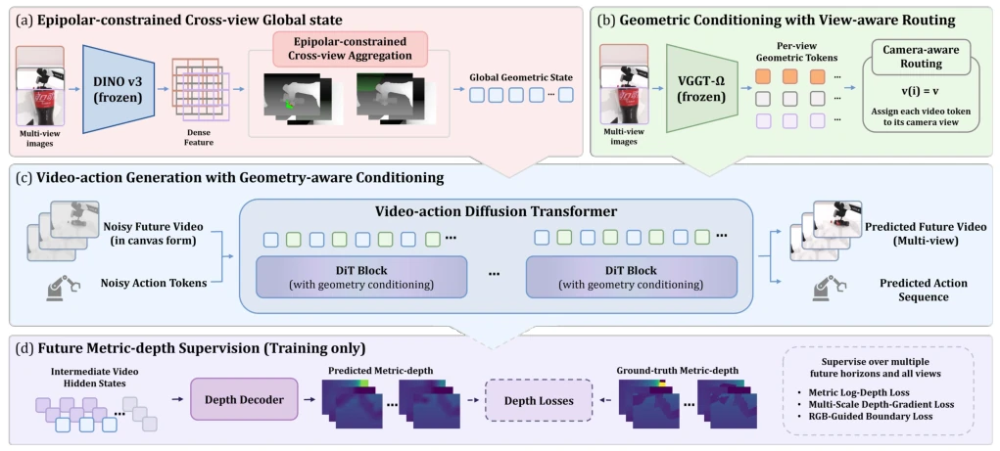
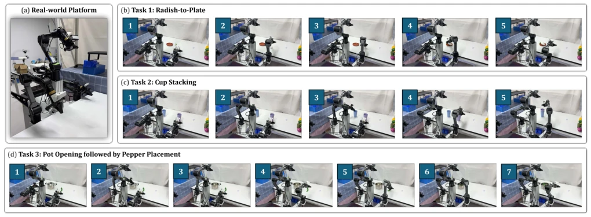
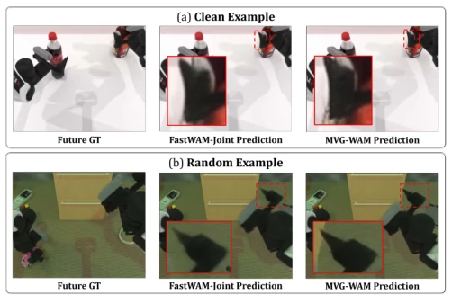

This paper teaches a lesson to multi-view world models (WAM): do not treat camera views as a collage. MVG-WAM forces multi-view inputs into geometric constraints, instilling 'physical scale' common sense into the model using epipolar geometry and depth supervision. Although it achieved SOTA scores of 99.1% and 92.07% on LIBERO and RoboTwin 2.0 without additional embodied pre-training, what happens if this architecture, which relies heavily on camera calibration, drifts in the real world? Depth supervision is only used during training, inference still relies on guessing, isn't this 'physical sense' a bit hollow? However, it is at least much better than those that simply concatenate multi-view tokens [6], at least knowing left and right hands are not two independent worlds. It attempts to solve the common flaw of WAM using geometric priors, but at the cost of a complex calibration process, does this count as sacrificing generalization for accuracy?
Existing WAMs, such as UVA [1] and Motus [3], largely inherit interfaces from video generation models, where multi-view inputs are typically simply tiled or concatenated [6]. This results in the model being unable to leverage known camera calibration information, with geometric relationships across views remaining implicit. For robot manipulation, scene cameras provide global context while wrist cameras provide local contact geometry; both must be correlated to infer interactions [1]. Existing methods require the model to learn visual dynamics and recover cross-view correspondences simultaneously during training, imposing too heavy a burden and yielding poor geometric consistency. MVG-WAM aims to address how multi-view observations are represented in a geometrically correlated manner, rather than as independent image blocks.

Fig. 1. Motivation and conceptual overview of our MVG-WAM. (a) Common multi-view interfaces tile images or concatenate tokens, leaving calibrated cross-view geometric relations implicit. (b) Scene and wrist views provide complementary global and local evidence about the same physical world. Manipulation therefore requires relating these observations to reason about object interaction. (c) MVG-WAM structures the representation of synchronized multi-view observations through an epipolar-constrained global state and view-indexed geometric conditioning, producing a geometry-aware video representation for action prediction. Future metric-depth supervision metrically grounds the geometry-aware video representation during training and is removed at deployment. (d) Among methods without additional
The overall pipeline is based on a video diffusion Transformer, taking synchronized multi-view observations as input. First, DINOv3 is used to extract dense features, which are aggregated across views through calibrated epipolar constraints to form a global state. Second, the frozen geometric foundation model VGGT-Ω [22] generates geometric states for view indices, injected into corresponding video regions via a routing mechanism. Finally, the video action backbone network receives these geometric conditions for prediction. During training, multi-view future depth supervision is introduced to anchor geometric representations to physical scales, while the depth decoder is removed during inference. This design explicitly organizes the geometric structure of multi-view observations rather than learning it implicitly.

Fig. 2. Architecture of our MVG-WAM. (a) Dense DINOv3 features are aggregated under calibrated epipolar constraints to provide cross-view geometric context. (b) Compact VGGT-Ωregisters form view-indexed geometric states, which are routed to the corresponding camera regions. (c) The global and view- indexed states condition the video stream of the video–action diffusion transformer, while action tokens access the geometry-enhanced video representation through mixed attention. (d) During training, future metric-depth supervision provides metric-scale grounding for intermediate denoising features across views and horizons; the depth decoder is not used during action rollout.
On LIBERO and RoboTwin 2.0, MVG-WAM achieves average success rates of 99.1% and 92.07% without additional embodied pre-training, outperforming FastWAM [6] and LingBot-VA [8]. On the real-world Cobot Magic, 150 trials achieved a 91.3% success rate. In out-of-distribution testing, robustness to Camera and Background offsets is significantly improved. Ablation studies indicate that removing epipolar constraints or depth supervision both lead to performance drops, demonstrating the effectiveness of the geometric components. However, the Clean2Random gap remains large, suggesting that unseen random conditions still present challenges.

Fig. 3. Real-world evaluation on Cobot Magic. (a) Physical manipulation platform with the wrist-mounted scene-view camera. (b)–(d) Representative execution sequences for radish-to-plate, cup stacking, and pot opening followed by pepper placement, respectively. The third task consists of two stages: removing the pot lid and subsequently placing the pepper into the pot. Frames progress from left to right within each sequence. The shown frames are captured from an external recording viewpoint rather than from the camera observations supplied to the policy. Quantitative success rates over 50 trials per task are reported in Table V.

Fig. 4. Qualitative short-horizon RGB prediction on RoboTwin 2.0. FastWAM-Joint and MVG-WAM use the same current observation and are compared against the same future target. Dashed boxes indicate gripper– object interaction regions, with enlarged crops shown in red. MVG-WAM produces more faithful local predictions, preserving sharper object bound- aries and more coherent gripper–object geometry.